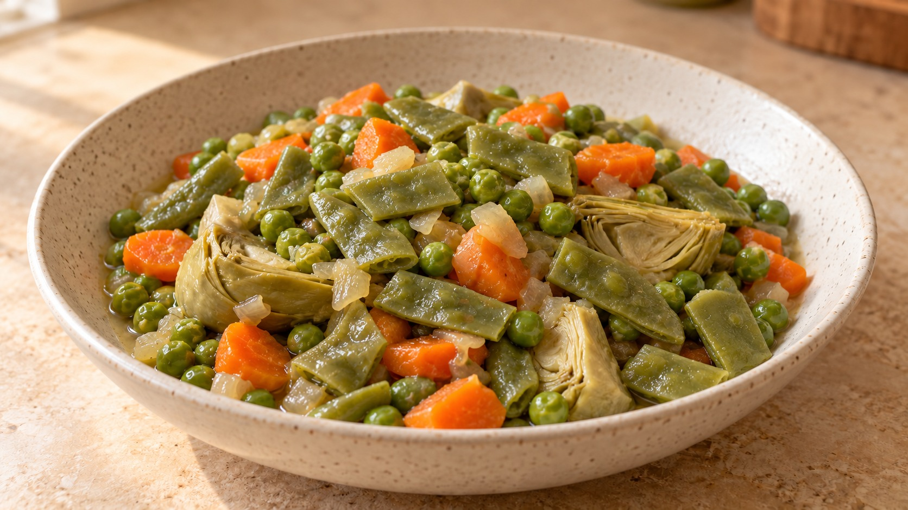

Menestra guisada
💚 Receta oral de Marisa, que prepara siguiendo los consejos de la tía Genia.

Más de VegetalesPDF para imprimir
Ingredientes
- 500 g de menestra congelada
- ½ cebolla
- 1 diente de ajo
- 1 cucharada de aceite de oliva
- 50 ml de agua, aproximadamente
- Sal y pimienta
Preparación
| Qué haces | Fuego y tiempo | El punto |
|---|---|---|
| 1. Ablandar la cebolla | ||
| Calienta el aceite y añade la cebolla picada fina. Remueve de vez en cuando. | Medio-bajo8 min | Hasta que… La cebolla queda blanda y translúcida, sin tostarse.la cebolla esté blanda y translúcida, sin tostarse. |
| 2. Añadir el ajo | ||
| Incorpora el ajo picado y remueve más a menudo. | Medio-bajo2 minEl sofrito suma 10 min. | Hasta que… El ajo desprende aroma, sin coger color.el ajo desprenda aroma, sin coger color. |
| 3. Rehogar la menestra | ||
| Añade la menestra, salpimienta y remueve para mezclarla con el sofrito. | Medio-alto5 min | Hasta que… Las piezas se separan y se mezclan bien con el sofrito.las piezas se separen y se mezclen bien con el sofrito. |
| 4. Guisar tapada | ||
| Añade 50 ml de agua. Lleva a hervor, baja el fuego y tapa. | Suave10 minCuenta desde que recupere un hervor ligero. | Hasta que… Prueba una pieza de las más firmes: debe estar tierna, sin deshacerse.las verduras estén tiernas, sin deshacerse. Prueba una de las piezas más firmes. |
| 5. Concentrar el fondo | ||
| Destapa y deja evaporar el líquido, removiendo con cuidado al final. | Medio-alto2–5 min | Hasta que… No queda un charco: las verduras conservan un fondo jugoso.no quede un charco y las verduras conserven un fondo jugoso. |
| 6. Dejar reposar | ||
| Apaga el fuego, retira la cazuela del calor y tapa. | 3–5 min | Hasta que… El guiso se asienta y sigue jugoso.el guiso se asiente, conservando su jugosidad. |
Claves
Escucha el sofrito. Debe chisporrotear suavemente. Baja el fuego si la cebolla se dora demasiado pronto; súbelo un poco si apenas se cocina. Usa una cazuela donde el sofrito no quede demasiado extendido.
Poca agua, sabor concentrado. No hace falta cubrir las verduras. Si el fondo se seca antes de que estén tiernas, añade un poco más de agua.
El punto manda. La cocción depende de las verduras de la mezcla y de su tamaño. Comprueba las indicaciones del envase y prueba antes de alargar el guiso.
Opciones
Para dar más sabor: Añade tacos de jamón o trocitos de carne al sofrito. Después incorpora un poco de vino y deja reducir antes de añadir las verduras. Esta opción necesita tiempo adicional; si usas carne, comprueba que quede bien cocinada.
Como guarnición o plato principal: Esta menestra puede servirse como guarnición. Para tomarla como plato principal, acompáñala con huevo cocido y, si no lleva carne ni jamón, bonito en conserva.
La receta oral de Marisa
- 500 g de menestra congelada
- Media cebolla
- Un diente de ajo
- Una cucharada de aceite de oliva
- Agua
- Sal
- Pimienta
- Sofreír la cebolla y el ajo picados a fuego lento, unos 5 minutos, según indica Marisa.
- Añadir la menestra congelada, que lleva un rato fuera del congelador, y subir el fuego.
- Salpimentar y rehogar 5 minutos.
- Añadir un culín de agua y tapar. Cocinar 10 minutos.
- Destapar y subir el fuego hasta evaporar el líquido.
- Tapar y dejar reposar unos minutos.
Para dar más sabor: añadir al sofrito tacos de jamón o trocitos de carne. Y a continuación, vino.
Para acompañar: huevo cocido y, si no lleva carne o jamón, bonito en conserva.